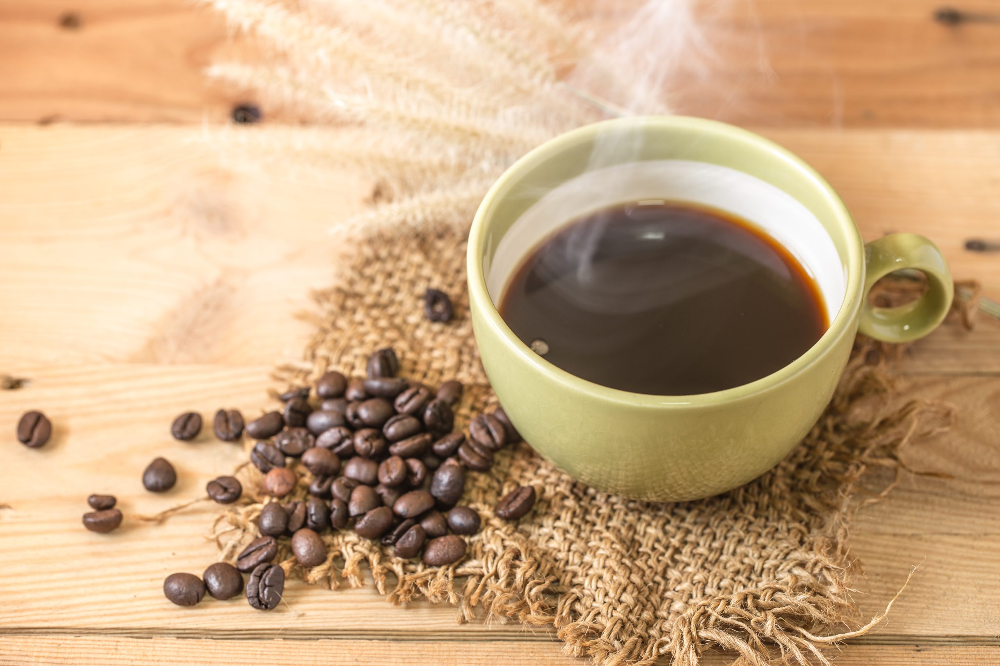

Cafè Arabica

El cafè aràbica és una varietat apreciada pel seu sabor suau i aromàtic, amb notes dolces i afruitades. Es cultiva principalment en zones d’alta muntanya, on el clima fresc afavoreix el seu creixement lent i la seva qualitat.